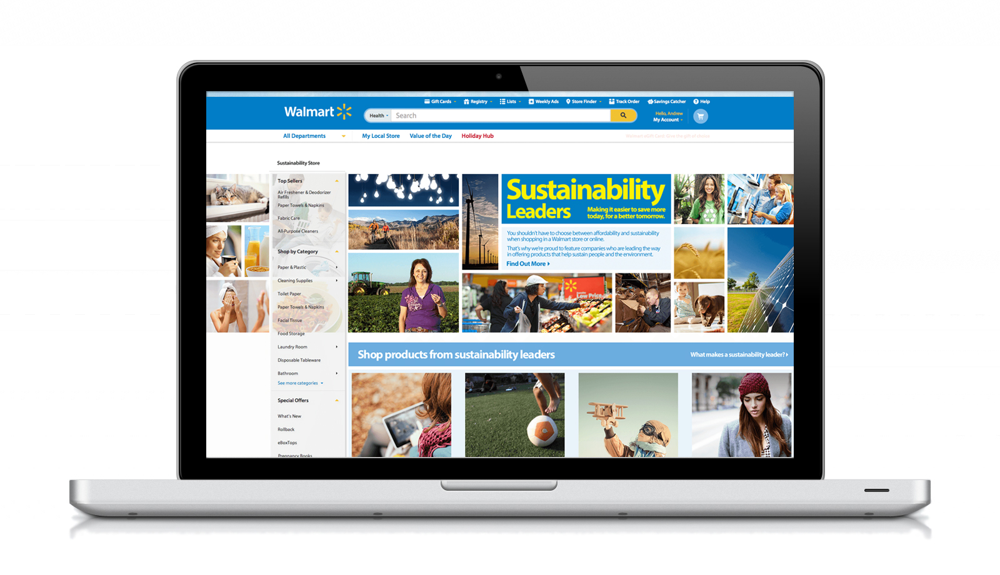

Products that perform.
From AI tools for pharma sales teams to major retail sites; real products built around what users actually need.

MCE Agent — Medical & Customer Engagement
An AI-powered platform for pharma commercial teams; featuring a home dashboard with KOL highlights, an Agent Assist panel that surfaces proactive scheduling and engagement recommendations, and deep HCP profiles with AI-generated pre-call prep. Built to help teams act faster on the right priorities.

Performance Management Center
A dashboard that gives pharma sales reps live data; revenue trends, engagement scores, and AI tips on what to do next. Built to help reps trust and use AI suggestions in a highly regulated industry where trust matters most.

Campaign Journey Flow Builder
A visual tool for pharma marketing teams to build and launch multi-channel campaigns. Non-technical users can create, check, and send out full customer journeys using a simple drag-and-drop map.

Next Best Action — Mobile Platform
A mobile app that shows pharma sales reps what to do next; based on AI. It brings together their schedule, AI tips, account data, and key numbers into one trusted tool they use every day in the field.

Clinical Provider Portal
A full redesign of Counsyl's genetic testing portal; bringing together test orders, reports, education, and patient records into one clean workflow. Launched in under a year. Users said it best: "YOU FIXED IT."

Sustainability Leaders — Walmart.com
Design lead for Walmart's first green products initiative; a dedicated online shop for sustainably made goods. Part of a small, fast-moving team that also improved Walmart.com across web, iOS, and Android.